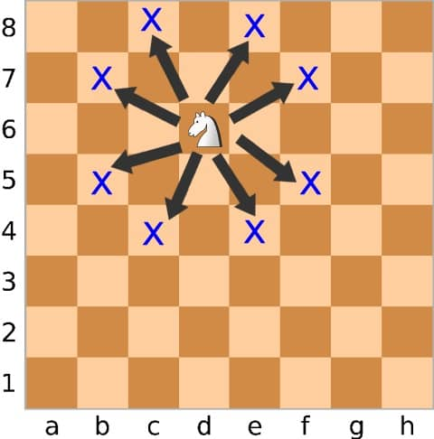
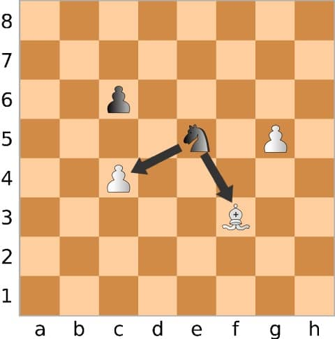

- Se déplacer en 'L', c'est à dire 2 cases dans une direction sauf les diagonales puis 1 case à gauche ou à droite.
- Les cases que le cavalier survole ne le permet pas de manger les pièces qui s'y trouve.
Seul les pièces se situant sur la case de destination du cavalier peuvent être mangé

